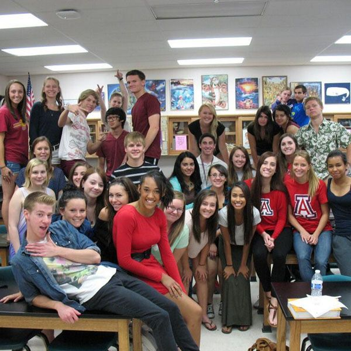

I started studying at groves high school and after three years being there i moved to another school call jankins high school and its okay by the followign reasons:
but also being at groves high school was really helpful to me because I went there withut knowing any english at all and there is a program called ESOL so i took that program for about 3 years and I have learned a lot of english
Being able to be in these school were very helpful to me and I am happy about it I actually im going to miss highschool i am going to Graduate in may actually and i am going to miss high school
